뇌졸중이란 뇌에 있는 혈관이 막히거나 터져서 발생하는 뇌혈관 질환 입니다. 중풍은 정의가 명확하지 않고 막연한 병명이고, 의학용어인 뇌졸중이 정확한 병명입니다.
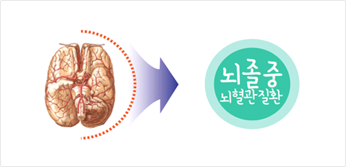
뇌혈관의 구조
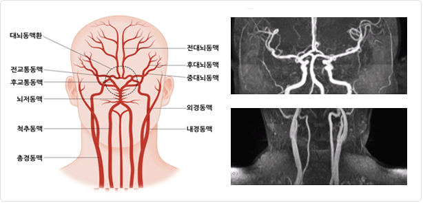
뇌는 우리 체중의 2%에 불과하지만 심박출량의 12~20%에 해당하는 혈액을 공급받고 있습니다. 뇌는 내경동맥과 척추동맥에 의하여 혈액공급을 받습니다. 내경동맥과 척추-뇌저동맥은 가는 혈관들에 의해 서로 연결되어 고리 모양을 형성하는데, 이 고리 모양을 대뇌동맥환(윌리스환)이라고 부릅니다. 대뇌동맥환(윌리스환)을 형성한 후 각 뇌조직으로 가지를 보내므로 한쪽 혈관이 막혀 일시적으로 혈류 공급이 중단되더라도 일반적으로 다른 쪽 혈관에 의해 혈액을 공급받을 수 있는 구조로 되어 있습니다.
뇌졸중의 종류
뇌혈관에 문제가 생겨 막히거나 터지게 되면 산소와 영양 공급이 중단되어 그 부위의 뇌세포가 죽게 되면서 반신마비, 혼수, 어지럼증 등의 증상이 발생합니다.
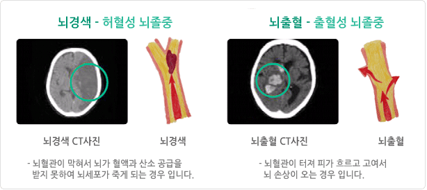
뇌졸중의 위험요인
뇌졸중의 위험성
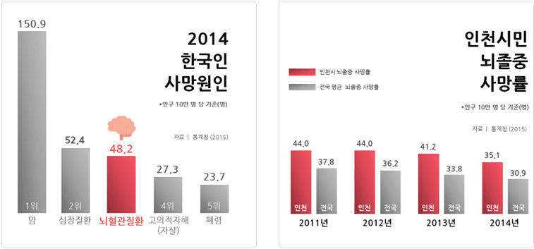
통계청 사망원인통계 결과에 따르면, 2012년 한 해 뇌졸중 (뇌혈관질환) 으로 인한 사망률이 51.1명으로 암, 심장질환에 이어 세 번째로 많았습니다. 그러나 인천 사망원인 순위 통계는 여전히 뇌혈관 질환이 2위로 높은 사망률을 보이며, 암사망률은 다양한 부위에 생긴 모든 암으로 인한 사망을 합산한 결과임을 고려할 때, 단일질환으로 인한 사망률은 뇌졸중(뇌혈관질환)이 1위입니다. 아직까지 우리나라는 OECD 국가 중 뇌졸중 사망률이 가장 높은 국가 중 하나입니다.
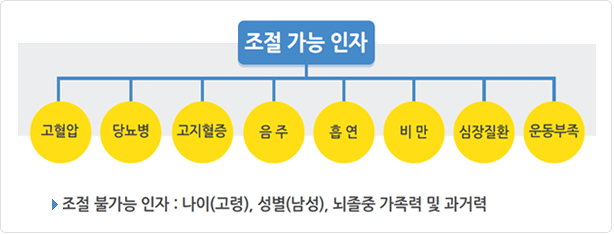
뇌졸중의 증상
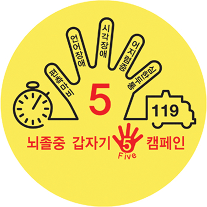
나이, 성별, 뇌졸중의 가족력과 같은 일부 위험요인들은 노력한다고 바꿀 수 있는 요인은 아닙니다. 그러나 대부분의 위험요인은 생활습관을 변화시키고 약을 규칙적으로 복용함으로써 관리가 가능합니다. 위험요인을 얼마나 잘 조절하는가에 따라서 뇌졸중의 발생확률을 낮출 수 있으며, 뇌졸중이 발생한 후에는 재발을 예방할 수 있습니다.
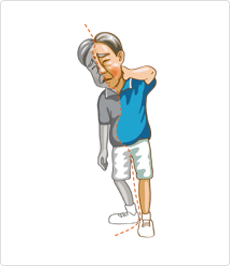
뇌졸중의 조기증상 1 - 편측마비
편측 마비
- 통증 없이 한쪽 팔, 다리에 마비가 발생합니다.
- 같은 쪽 얼굴, 팔, 다리가 움직이지 않는 상태가 지속됩니다.
- 수저나 컵을 쥐고 있지 못하고 떨어뜨립니다.
- 눈을 위로 떠 이마에 주름을 만들 때 양측이 동일하게 주름 지어지지 않거나 입으로 ‘이~’ 소리를 낼 때 마비된 쪽의 입술이 잘 움직이지 않습니다.
편측 마비가 아닌 것
- 저림, 따가움, 시려움 등의 증상과 양쪽 다리 , 양쪽 팔의 힘이 동시에 빠지는 것은 편측 마비가 아닙니다.
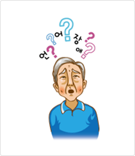
뇌졸중의 조기증상 2 - 의식장애/언어장애
의식장애
- 깨우지 않으면 자꾸 자려고 하고 여러 번 깨워야 겨우 일어납니다.
- 깨워도 일어나지 못하고, 불러도 눈을 뜨지 못합니다.
- 자극에 눈은 뜨나 사람을 알아보지 못합니다.
언어장애
- 말은 유창하게 하나 상대방의 말을 이해하지 못합니다.
- 상대방의 말은 이해하나 말하고 싶은 대로 말이 나오지 않습니다.
- 상대방의 말을 이해하지도 못하고 말도 하지 못합니다.
- 말이 제대로 나오지 않아 더듬거리거나 발음이 부정확하여 알아듣기 어렵습니다.
뇌졸중의 조기증상 3 - 시각장애
시각장애
- 걸어가다가 한쪽 측에 물건을 보지 못해 부딪치거나 식사 시 한쪽 부분의 반찬만 먹는 등의 한쪽 눈이나 시야가 잘 보이지 않습니다.
- 눈 앞의 사람이나 물건이 두 개로 겹쳐 보이는 현상이 나타납니다.
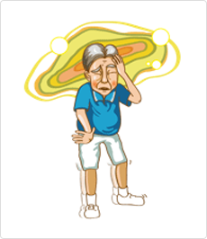
뇌졸중의 조기증상 4 - 어지럼증
어지럼증
- 순간 주저 앉을 정도로 몸의 중심을 잡지 못하거나 심하게 어지럽습니다.
갑작스러운 평행/보행 장애
- 걸으려고 하면 몸이 한쪽으로 기울어져 걷기 힘듭니다.
- 팔, 다리에 힘은 있는데 마음대로 움직임을 조절할 수 없습니다.
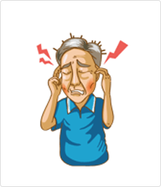
뇌졸중의 조기증상 5 - 심한두통
갑자기 발생하는 매우 심한 두통
- 뻐근함, 지끈지끈함, 욱신거림 정도가 아닌 일생에 한 번도 경험해보지 못한 정도의 심한 두통 증상입니다.
- 특히, 갑자기 발생한 극심한 두통은 지주막하 출혈을 꼭 의심해보아야 합니다.
뇌졸중 대처법
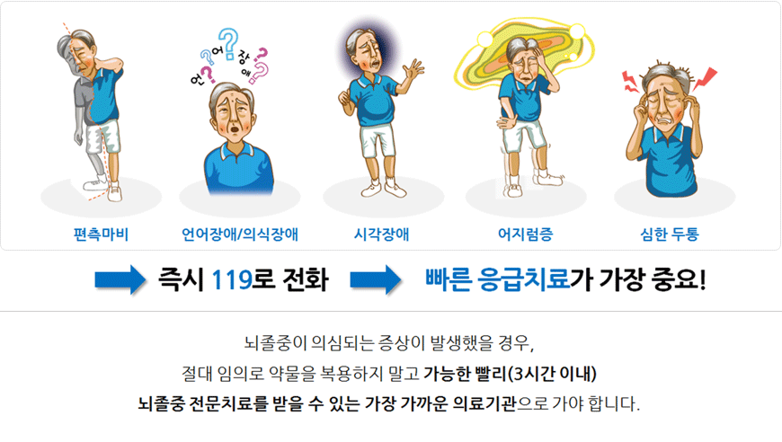
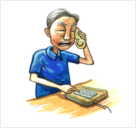
하세요!!
- 기도가 막히지 않도록 환자를 편하게 해주세요.
- 조이는 옷을 느슨하게 해주세요
- 구토하는 경우 기도로 음식물이 들어갈 수 있으므로 얼굴은 옆으로 돌려주시고 입안을 닦아주세요.